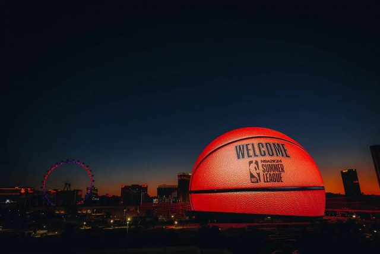

Explore a global culinary journey during your summer vacation. Delve into local food cultures, savor unique flavors and restaurants, and embark on a gastronomic adventure that will tantalize your taste buds.
Landscape
Your destination for a summer adventure that seamlessly blends the wonders of nature and culture. From majestic mountain ranges to historical landmarks, every attraction offers an inspiring journey, immersing you in its unique charm.
Entertainment
Endless summer fun and boundless vitality. Whether you seek outdoor adventures, immerse yourself in natural wonders, or engage in cultural activities, your vacation promises an abundance of joy and excitement.
Japanese cuisine values fresh, seasonal ingredients like seaweed and soy sauce to create delicate yet savory dishes such as sushi, ramen, and tempura.
Italian cuisine celebrates regional, seasonal ingredients like tomatoes, olive oil, and pasta. Signature dishes include pizza, risotto, ossobuco, and tiramisu. The roots of Italian cooking come from the country's diverse regions, creating rustic yet refined dishes that emphasize fresh produce, seafood, and cheese.
Turkish cuisine features spiced meat dishes, stews, and diverse small plates called meze. Robust flavors like garlic, yogurt, and Aleppo pepper shape iconic dishes like kebabs, baklava, stuffed vegetables, and Turkish coffee. Ottoman, Arabic, and Mediterranean influences create Turkey's unique food culture.
Indian cuisine features complex spicing and diverse vegetarian dishes. Signature flavors like cumin, turmeric, cardamom, and chili peppers create robust curries, stews, and grilled meats. Regional diversity shapes iconic dishes like tandoori chicken, samosas, naan breads, biryani, and chutneys. India's food reflects its history as a cultural crossroads.
Mount Fuji is Japan's tallest peak and most iconic landmark, rising 3,776 meters. Considered sacred, it has long inspired art and literature. Fuji's symmetric cone overlooking lakes and forests graces countless images of Japan. Hiking trails lead up the volcano, which last erupted in 1707. Fuji is a UNESCO World Heritage Site.
The Leaning Tower of Pisa is a breathtaking marble bell tower located in Pisa, Italy. Famous for its unintended tilt, this architectural wonder rises nearly 56 meters with 8 stories of intricate arches and columns. Construction began in 1173 but soft soil caused the structure to start leaning by 1178 during its long 199 year build. Today it is secured and open to the public.
The Sydney Opera House is an architectural marvel featuring shell-like curves and soaring white sails. Perched on Sydney Harbour, this iconic performing arts complex was designed by Jørn Utzon and completed in 1973. It hosts over 1,800 shows annually across multiple venues and is a UNESCO World Heritage Site, recognized for its structural brilliance.
The Egyptian pyramids are monumental tombs built for pharaohs of the Old Kingdom. The Great Pyramids at Giza, constructed circa 2550 BCE, are the largest and most famous. Built of limestone and granite blocks, they contain elaborate chambers to house the sarcophagus and worldly goods of the deceased ruler for the afterlife. The pyramids are architectural marvels and symbols of ancient Egyptian civilization.
RMIT Capital is a financial entity affiliated with RMIT University, engaging in strategic investments and fostering innovation in the business and education sectors.
The MSG Sphere is a visionary performance venue under construction in Las Vegas. Featuring a high-tech spherical design, it will have an LED exterior surface and interior immersive displays to envelop audiences. With a scalable capacity reaching up to 20,000, the MSG Sphere aims to revolutionize live entertainment and music experiences.

Disney's theme parks are immersive wonderlands bringing movies and characters to life. Filled with rides, shows, and themed areas, parks like Disneyland and Disney World transport guests into magical realms. From Sleeping Beauty's Castle to Star Wars: Galaxy's Edge, Disney's playgrounds capture the company's spirit of imagination and adventure. Families have made Disney vacations a cherished tradition since 1955.
Spas are havens for relaxation and rejuvenation. They provide a variety of services like massages, facials, body treatments, and hydrotherapy to soothe the body and mind. Many spas feature amenities like saunas, pools, and lounges to enhance the experience. With their tranquil settings and focus on wellness, spas offer an escape from everyday stresses to restore balance and promote healing.